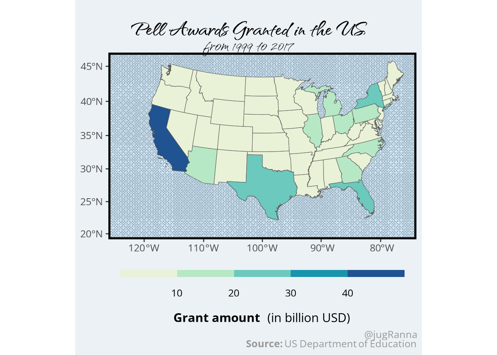

data <- tidytuesdayR::tt_load("2022-08-30")Pell Awards
Tidy Tuesday
This is my tenth contribution to TidyTuesday, which is ‘a weekly podcast and community activity brought to you by the R4DS Online Learning Community’. Their goal is to help R learners learn in real-world contexts.
For more information, visit the TidyTuesday homepage, check out their GitHub repository and follow the R4DS Learning Community on Twitter.
The purpose of these posts is mainly for exercising purposes. Thus, the provided graphs are not necessarily designed to provide the greatest possible insights. However, I always provide the R code for interested people at the page bottom.
Note: This is the first post I generate using Quarto, ‘an open-source scientific and technical publishing system built on Pandoc’. I will use it frequently in my following posts.
library(colorspace)
library(knitr)
library(sf)Linking to GEOS 3.10.2, GDAL 3.4.1, PROJ 8.2.1; sf_use_s2() is TRUElibrary(ggtext)
library(ggplot2)
library(rnaturalearth)
library(rnaturalearthdata)
Attaching package: 'rnaturalearthdata'The following object is masked from 'package:rnaturalearth':
countries110library(ggpattern)
library(showtext)Loading required package: sysfontsLoading required package: showtextdbPell Grants
This week’s data comes from US Department of Education. It is also available via the Pell Grant on CRAN. More details about the data can also be found in the package’s vignette. It contains 100474 observations of six variables (state, award, recipient, name, session, year). This is a quick look at the variables and their meaning (from the Tidy Tuesday vignette):
| variable | class | description |
|---|---|---|
| STATE | integer | State shortcode |
| AWARD | double | Award amount in USD |
| RECIPIENT | double | Total number of recipients by year, name |
| NAME | integer | Name of college / university |
| SESSION | integer | Session group |
| YEAR | integer | Year |
Highest number of awards per university
To start out, I take a quick look at the universities who received the highest (and lowest) total amount of grants over the complete time horizon (1999 - 2017):
pell <- na.omit(pell)
kable(
head(sort(tapply(pell$AWARD, pell$NAME, sum), decreasing = TRUE)),
col.names = c("Total grant money received")
)| Total grant money received | |
|---|---|
| University of Phoenix | 7949271992 |
| Ashford University | 1940355376 |
| City University of New York Central Office | 1885270659 |
| Itt Technical Institute | 1830449269 |
| Devry University | 1817806084 |
| Kaplan University | 1531089195 |
I use the kable() function from the knitr package in order to directly convert the R output to a table that can be displayed on this website. There are of course other possible ways to summarize the data, and some applicants prefer functions from the tidyverse package. I however, do not.
kable(
head(sort(tapply(pell$AWARD, pell$NAME, sum), decreasing = FALSE)),
col.names = c("Total grant money received")
)| Total grant money received | |
|---|---|
| Bank Street College of Education | 0 |
| Bilingual Education Institute | 0 |
| Briarcliffe College - Patchogue | 0 |
| Claremont Graduate University | 0 |
| Cuyahoga Community College - District Office | 0 |
| Eastern New Mexico University - Rowsell | 0 |
Students from the University of Phoenix have received the most fundings from the Pell grant over the whole time horizon, totalling up to almost 7 billion USD from 1999-2017. Some universities / colleges, like Claremont Graduate University, have received no Pell Grants in the regarded horizon.
Distribution of grants over the states
Another interesting aspect is the distribution of grants over the states in the US. I look at this aspect using a map generated again with the sf package. A new package I just discovered is the ggpattern package. I want to try this package and use it to color the background behind the actual map.
Retrieving data for the year 2021# actual plot
theme_set(theme(text = element_text(family = "osans", size = 25)))
showtext_auto()
ggplot(a) +
geom_rect_pattern(aes(xmin = -3000000, xmax =3000000, ymin = -3000000, ymax = 900000), pattern = "magick",
fill = "#dcf1ff", pattern_type = 'gray15', pattern_scale = 2,
pattern_colour = "#007ed3", pattern_alpha = 0.002, pattern_angle = 40) +
geom_sf(aes(fill = amount)) +
scale_fill_binned_sequential(palette = "Blue-Yellow") +
coord_sf(crs = st_crs(2163), xlim = c(-2500000, 2500000), ylim = c(-2300000,
730000)) +
labs(
title = bquote(bold("Pell Awards Granted in the US")),
subtitle = "from 1999 to 2017",
fill = bquote(bold("Grant amount")~" (in billion USD)"),
caption = "@jugRanna<br>**Source:** US Department of Education"
) +
theme(
plot.title = element_text(family = "qwitcher", size = 55, lineheight = 0, margin = margin(1, 0, 0.1, 1), vjust = -0.7),
plot.subtitle = element_text(family = "qwitcher", size = 45, lineheight = 0.35, vjust = 0.4),
legend.position = "bottom",
legend.background = element_rect(fill = '#ebf1f5', color = '#ebf1f5'),
panel.background = element_rect(fill = 'white', color = 'black'),
plot.background = element_rect(fill = "#ebf1f5", color = "#ebf1f5"),
plot.title.position = "plot",
panel.border = element_rect(color = "black", fill = NA, size = 2),
plot.caption = element_markdown(color = "gray60", lineheight = 0.35, hjust = 1, size = 20),
plot.caption.position = "plot"
) +
guides(fill = guide_colorsteps(title.position = 'bottom', even.steps = TRUE,
barwidth = 20, barheight = 0.5,
title.hjust = .5)) Warning: The `size` argument of `element_rect()` is deprecated as of ggplot2 3.4.0.
ℹ Please use the `linewidth` argument instead.
It is apparant that students in California have received the most money from the Pell Grant, more than 40 billion USD between 1999 and 2017. A close look at the number of universities / colleges reveals why that is the case (or at least part of the reason):
kable(
head(
sort(table(pell$STATE), decreasing = TRUE)
)
)| Var1 | Freq |
|---|---|
| CA | 9593 |
| NY | 6736 |
| TX | 5482 |
| PA | 5453 |
| FL | 4744 |
| OH | 4570 |
California has by far the most universities / colleges in the country. Other states that show higher numbers in schools also receive more money from the Pell Grant.
Full R code available on Github.
References
colorspace-package:
https://colorspace.r-forge.r-project.org/index.htmlknitr-package:
https://yihui.org/knitr/sf-package:
https://r-spatial.github.io/sf/rnaturalearth-package:
https://docs.ropensci.org/rnaturalearth/ggpattern-package:
https://coolbutuseless.github.io/package/ggpattern/index.htmlshowtext-package:
https://cran.r-project.org/web/packages/showtext/index.htmlggtext--package: https://wilkelab.org/ggtext/